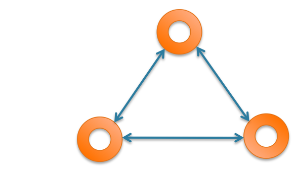
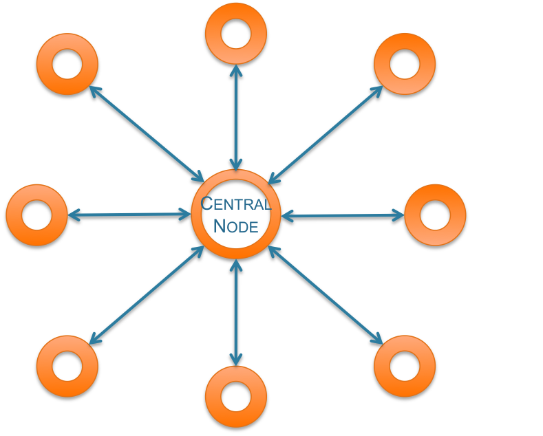
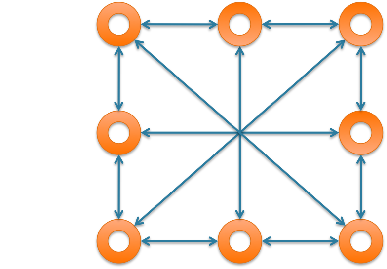

Network Architecture
To understand the global architecture of a WSN, it is essential to first enlighten the different types of nodes comprised by Wireless Sensor Networks and to understand their respective role.
Types of nodes
Basic Sensor Nodes: those nodes features only restricted functions: they are able to monitor data and communicate it to the other nodes.
Data Aggregators: they are sensor nodes with the additional features that allow them collect data from their peer nodes and to perform aggregation and computations on it.
Data Sink Nodes: are the nodes in the network that collect all the network data and transmit it for further processing.
Data Gateways: provide routing from a network to other networks; to be exact, they are responsible of allowing access from the outside, or from sub-networks, to the WSN and vice-versa. When a network does not feature sub-networks, the gateway node is also the sink node.
Architecture topologies
Peer-to-Peer topology (P2P)
This network topology allows each node to communicate directly – i.e. through no intermediate node - with another. Each node is a peer device able to act as both a “client” and a “server” to the other nodes on the network.
Star topology
In this case, every sensor node of the network is connected to a same and unique central node that centralise information. Nodes can communicate to each other only using the central node as intermediate node. No direct communication, apart with the central node, can be operated between the network’s nodes. The central node acts as a "server" whilst the other nodes are "clients".
Mesh topology
This network allow data to hop from node to node, this allows the network to be self-healing – this means that if one node fails or happens to be compromised, the data communication can still occur using other nodes and reach the desired node.
Tree topology
The whole network is hierarchically organised and forms a tree. At the top of the tree, the sink node - here called root node - is the main communication node. The basic sensor nodes are located at the tree leaves and transmit data to intermediate sensor nodes. Those sensor nodes then forward the data to the root node – sink node - using other intermediate nodes. Thus, each leave can only communicates with a specific intermediate node and can not communicate directly with any other node. The Tree network is considered a hybrid of both the Star and Peer to Peer networking topologies.